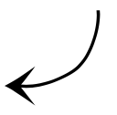

2022 — 24
Comic
Text by Esperanza Collado
Drawings: Paula Guerrero
Graphic design: Jaime Narváez
First edition (English)
Kino-Okno 100, Madrid 2022
20 pages, 210 x 140 mm, 100 copies
Printed by Pulse Print
ISBN 978-84-09-45531-7
Second edition (newspaper format)
CA2M Centro de Arte Dos de Mayo, Madrid 2024
6 folded sheets, 57.5 x 37 cm (open), 29 x 37 cm (folded), 1,000 copies
English, with an explanatory note in English and Spanish
Printed by Calprint
//
Things Said Once is an artistic statement and a tribute to film and cinema that acknowledges its history and our responsibility for its continuity in the present. Written as a poem, the text is built around the concept of cinema as experience in its spatial, temporal, and communitarian or social dimensions.
Things Said Once has also been published in Spanish, French, Persian, Swedish, traditional Chinese, and as a comic.
See also: Things Said Once (the performance)